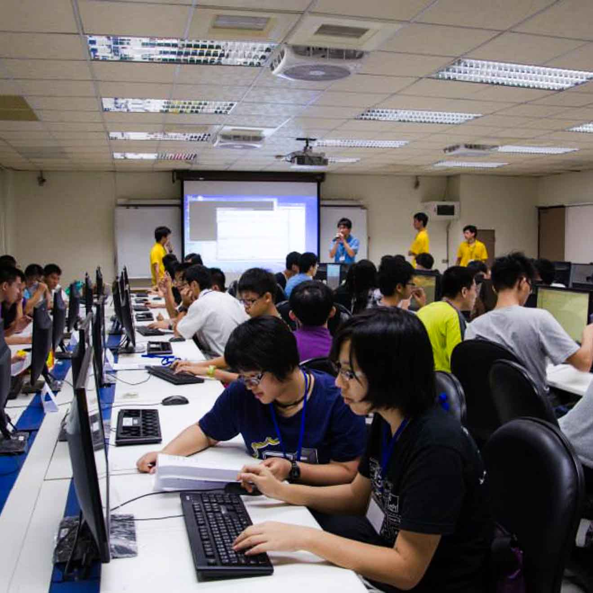

|  |
| 主辦單位 | 國立成功大學 計算機與網路中心 與 資訊工程學系 |
|---|---|
| 競賽宗旨 | 集結各縣市高中生程式競賽好手組隊互相切磋， 介紹成功大學計算機與網路中心與資訊工程學系之程式設計培訓環境， 及介紹ACM-ICPC程式設計競賽給對程式設計有興趣的高中生。 |
| 競賽資格 | 全台灣各縣市就讀高中或高職之學生 (含應屆畢業生) |
| 競賽日期 | 2015年7月8號(星期三) |
| 競賽形式 | 以團隊競賽形式進行，每組2~3人 |
| 競賽地點 | 國立成功大學 資訊工程學系新大樓3樓電腦教室 |
| 報名費用 | 免費 |
| 報名期限 | 五月底開放線上報名至104年6月25日， 總隊數預計60隊，以實際報名隊數為準（額滿提前截止） |
| 獎勵方式 | 第一名：取一組，獎金5000元及獎狀 第二名：取一組，獎金3000元及獎狀 第三名：取一組，獎金2000元及獎狀 佳作：若干組，1000元禮券及獎狀 |
| 9:00~9:30 | 報到 |
|---|---|
| 9:30~10:30 |
|
| 10:40~11:30 | 機器測試 |
| 11:30~12:20 | 午餐時間 |
| 12:30~16:00 | 競賽期間 |
| 16:00~16:30 | 題目解析 |
| 16:30~ | 頒獎 |
| 比賽時間總長 | 210分鐘 |
|---|---|
| 比賽提供環境 (IDE) |
|
| 編譯參數 |
|
| 競賽方式 | 仿照國際ACM-ICPC競賽模式， 題目總數量為8題，比賽時間3小時30分鐘。 |
| 評分方式 | 評分以能正確解題數目最多的隊伍為優勝， 解題數目相同時，以累計的解題時間較少者為優勝。 |
| 競賽規定 |
|
| 編號 | 隊伍名稱 | 隊員1 | 隊員2 | 隊員3 |
| 1 | 雄中都答不隊 | 余O序 | 洪O輝 | 江O紘 |
| 2 | Lacy超威 | 王O平 | 王O韋 | 黃O喻 |
| 3 | cjshsK102 | 錢O嘉 | 邱O叡 | |
| 4 | 嫁給我吧~希羽妍 | 蘇O嘉 | 涂O銘 | 朱O丞 |
| 5 | 洛陽親友如相問就說我在抵霸葛 | 劉O永 | 翁O齊 | 吳O和 |
| 6 | 小餓魚 | 曾O鈞 | 莊O伊 | 楊O樺 |
| 7 | A team | 許O禎 | 陳O維 | 潘O彤 |
| 8 | 家佑根本艾克 | 林O佑 | 吳O鈞 | 劉O廷 |
| 9 | Over Range 魔咒 | 黃O雅 | 黃O祥 | |
| 10 | "" | 林O毅 | 葛O聿 | |
| 11 | 王者天下 | 江O翰 | 陳O瑋 | 李O安 |
| 12 | 南二中最弱三位本來是來領參賽證明如有得獎只是運氣好 | 林O曄 | 陳O憲 | 王O臻 |
| 13 | O______O | 張O傑 | 牛O煒 | 吳O達 |
| 14 | 卦長表示平衡樹比女友重要因此要找一個像平衡樹的女友 | 林O | 黃O諭 | 王O寬 |
| 15 | 全部都隊 | 方O玲 | 陳O鈴 | 歐O瑜 |
| 16 | 就是IN_BUN_BUN | 楊O諭 | 王O晉 | 林O閔 |
| 17 | 醬寫明明就可以 你是在傲嬌什麼 | 吳O熹 | 許O豪 | 鄭O和 |
| 18 | 哥不是來coding 的，是來吃東西的。野! | 蔡O宇 | 洪O五 | |
| 19 | using namespace AC; | 何O睿 | 何O鈞 | 詹O宏 |
| 20 | random()%2147483647 | 呂O翰 | 范O瑋 | |
| 21 | Return True | 高O佑 | 洪O軒 | 林O尉 |
| 22 | 生為蘿莉死為正太，但是鍋子為東方而生和死 | 黃O敏 | 郭O均 | |
| 23 | 隊長沒來 | 黃O輝 | 陳O霖 | |
| 24 | 小喨喨隊 | 呂O安 | 余O恬 | 張O蘭 |
| 25 | Debug with umbilicus | 陳O修 | 鄭O遠 | 吳O豫 |
| 26 | 高職沒教演算法但我們還是來了 | 施O軒 | 陳O祥 | |
| 27 | 蘭陽BUG廬 | 楊O軒 | 謝O默 | 魏O宇 |
| 28 | 彰化男子聯合 | 許O倫 | 陳O杰 | 陳O偉 |
| 29 | 97 | 周O鑫 | 陳O愷 | |
| 30 | /)_- | 趙O凱 | 何O融 | 朱O丞 |
| 31 | 我不知道我們是哪一隊耶 | 吳O誠 | 高O廷 | 楊O崴 |
| 32 | 躺著也中槍 | 陳O豪 | 林O慧 | 吳O成 |
| 33 | worse | 蘇O門 | 李O陽 | 周O寬 |
| 34 | 隨便 | 胡O賓 | 王O志 | 張O誠 |
| 35 | 下筆如有神 | 柯O逸 | 柯O恩 | 曾O祥 |
| 36 | I love CISS team1 | 吳O緯 | 高O廷 | |
| 37 | I love CISS team2 | 蘇O翔 | 李O毅 | 林O康 |
| 自行開車(國道路線) |
| 南下：沿國道一號南下 → 下永康交流道右轉 → 沿中正北路、中正南路(南向)往台南市區直行 → 中華路左轉 → 沿中華東路前進 → 於小東路口右轉，直走即可抵達本校。 【自國道三號南下者，轉國道8號（西向），可接國道一號（南向）】 |
| 北上：沿國道一號北上 → 下仁德交流道左轉 → 沿東門路(西向)往台南市區直走 → 遇林森路或長榮路右轉(北向)，即可抵達本校。 【自國道三號北上者，轉86號快速道路（西向），可接國道一號（北向）】 |
| 搭乘高鐵 |
| 搭乘台灣高鐵抵台南站者，可至高鐵台南站二樓轉乘通廊或一樓大廳1號出口前往台鐵沙崙站搭乘
台鐵區間車前往台南火車站，約30分鐘一班車，20分鐘可到達台南火車站；成功大學自台南火車站後站步行即可到達。 ※台灣高鐵轉乘服務資訊 |
| 搭乘火車 |
| 於台南站下車後，自後站出口（大學路），大學路左側即為本校光復校區。繼續往前步行，經過勝利路之後，左手邊即為成功校區。 |
| 名次 | 學校 | 隊員 |
| 第一名 | 國立台南第一高級中學 | 蘇O門、李O陽、周O寬 |
| 第二名 | 國立台南第二高級中學 | 林O曄、王O臻 |
| 第三名 | 國立科學工業園區實驗高級中學 | 何O睿、何O鈞、詹O宏 |
| 佳作 | 高雄市立高雄高級中學 | 余O序、洪O輝、江O紘 |
| 佳作 | 國立台南第一高級中學 | 王O平、王O韋、黃O喻 |
| 佳作 | 國立嘉義高級中學 | 張O傑、牛O煒、吳O達 |
| 佳作 | 國立新竹高級中學 | 林O、黃O諭、王O寬 |
| 佳作 | 國立科學工業園區實驗高級中學 | 呂O翰、范O瑋 |
| 佳作 | 國立台南第一高級中學 | 蘇O嘉、涂O銘、朱O丞 |
| 名次 | 學校 | 隊員 |
| 第一名 | 國立新竹高級中學 | 張O捷、林O、黃O源 |
| 第二名 | 國立台南第一高級中學 | 劉O永、李O陽、李O毅 |
| 第三名 | 私立立人高級中學 | 周O鑫、林O承、簡O諺 |
| 佳作 | 高雄市立高雄高級中學 | 蔡O佑、劉O承、林O萱 |
| 佳作 | 國立台南第二高級中學 | 徐O譯、林O曄、陳O憲 |
| 佳作 | 國立彰化高級中學 | 賴O銘、巫O佑 |
| 佳作 | 高雄市立高雄高級中學 | 葉O智、洪O隆、柳O澤 |
| 佳作 | 台南市立建興國民中學 | 周O寬 |
| 佳作 | 國立台南第一高級中學 | 涂O銘、洪O喆 |
| 佳作 | 高雄市立高雄高級中學 | 余O序、江O紘 |
| 佳作 | 私立興國高級中學 | 侯O育、楊O諭、林O侑 |
| 名次 | 學校 | 隊員 |
| 第一名 | 高雄市立高雄高級中學 | 王O朋、劉O承、余O謙 |
| 第二名 | 高雄市立高雄高級中學 | 林O翼、唐O晨、佘O祐 |
| 第三名 | 國立台中第一高級中學 / 國立台中文華高級中學 | 陳O宇、林O泉 |
| 佳作 | 國立台南第一高級中學 | 吳O宇、江O霖 |
| 佳作 | 新北市立板橋高級中學 | 劉O昇、劉O謙 |
| 佳作 | 國立台南第一高級中學 | 吳O倫、蔡O宇 |
| 佳作 | 國立台南第一高級中學 | 李O陽、林O俞 |
| 佳作 | 高雄市立高雄女子高級中學 | 柯O伶、曾O珊、蕭O潔 |
| 佳作 | 高雄市立高雄高級中學 | 吳O誠、葉O智 |
| 佳作 | 私立興國高級中學 | 林O民、林O倫、郭O岐 |
| 佳作 | 國立台中第一高級中學 | 楊O澍、蔡O聰、劉O翔 |
| 佳作 | 國立台南第一高級中學 | 翁O齊、吳O和、李O毅 |
| 名次 | 學校 | 隊員 |
| 第一名 | 台北市立第一女子高級中學 / 高雄市立高雄高級中學 / 私立興國高級中學 | 阮O維、程O元、林O皝 |
| 第二名 | 國立台南第一高級中學 | 江O霖、吳O倫、王O綸 |
| 第三名 | 高雄市立高雄高級中學 | 陳O宇、林O翼、唐O晨 |
| 佳作 | 私立瀛海中學 | 金O儒、楊O碉 |
| 佳作 | 國立台南第一高級中學 | 林O景、黃O程 |
| 佳作 | 私立興國高級中學 | 黃O佑、吳O叡 |
| 佳作 | 高雄市立高雄高級中學 | 余O憲、楊O源、洪O欽 |
| 佳作 | 國立台南第一高級中學 | 李O陽、陳O碩 |
| 編號 | 試題連結 | 時間限制 |
| #A | 擲骰子 | 1.000 sec |
| #B | 費波那契數列是你？！ | 1.000 sec |
| #C | 小紅帽歷險記 | 1.000 sec |
| #D | 密碼 | 1.000 sec |
| #E | 冰雪奇緣 | 1.000 sec |
| #F | 大家族 | 1.000 sec |
| #G | 尋找最經濟的產品升級方式 | 2.000 sec |
| #H | 聰明的巡邏員 | 6.000 sec |
| 編號 | 試題連結 | 時間限制 |
| #A | 睡吧喬治 | 1.000 sec |
| #B | 神奇寶貝大師之路-迷幻森林 | 2.000 sec |
| #C | 四面體 | 2.000 sec |
| #D | 公車司機問題 | 1.000 sec |
| #E | 股票走勢圖 | 3.000 sec |
| #F | 機器人 | 1.000 sec |
| #G | 城市馬拉松 | 10.000 sec |
| #H | 數字矩陣覆蓋問題 | 3.000 sec |
| 編號 | 試題連結 | 時間限制 | 記憶體限制 |
| #1 | 難度1 就決定是你了 | 5.000 sec | none |
| #2 | 難度1 最佳排程 | 1.000 sec | 262144KB |
| #3 | 難度1 霓虹燈泡 | 1.000 sec | 262144KB |
| #4 | 難度2 永遠不會死的老鼠 | 3.000 sec | 262144KB |
| #5 | 難度2 立柱包牌法 | 3.000 sec | 262144KB |
| #6 | 難度2 英文文字數字串 | 1.000 sec | 262144KB |
| #7 | 難度3 次方數數字和 | 1.000 sec | 262144KB |
| #8 | 難度3 戰前準備 | 8.000 sec | none |
| 編號 | 試題連結 | 時間限制 |
| #A | Decoding | 3.000 sec |
| #B | Reverse and Add | 1.000 sec |
| #C | Ones | 1.000 sec |
| #D | 刪除數字 | 5.000 sec |
| #E | WERTYU | 1.000 sec |
| #F | 正妹逛街購物問題 | 2.000 sec |
| #G | Walking on the Safe Side | 3.000 sec |
| #H | 用符號畫等腰梯型 | 2.000 sec |
主辦單位:國立成功大學 計算機與網路中心 與 資訊工程學系
協辦單位: IEEE Tainan Section
【 Contact 】
ylchao@mail.ncku.edu.tw
06-2757575 ext 62500#11(趙小姐)